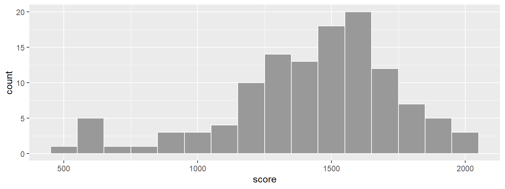
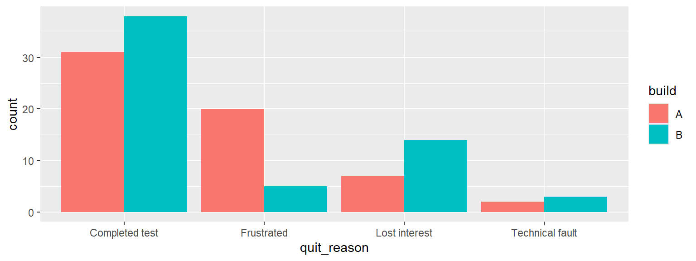
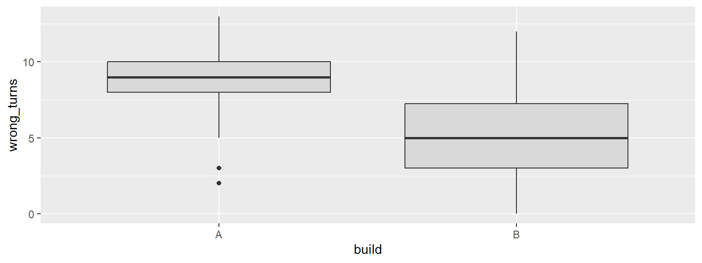
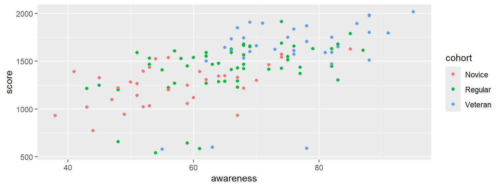
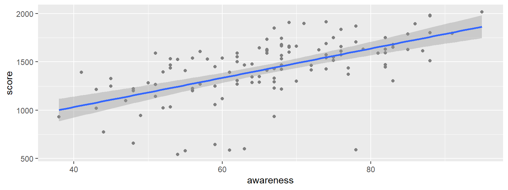
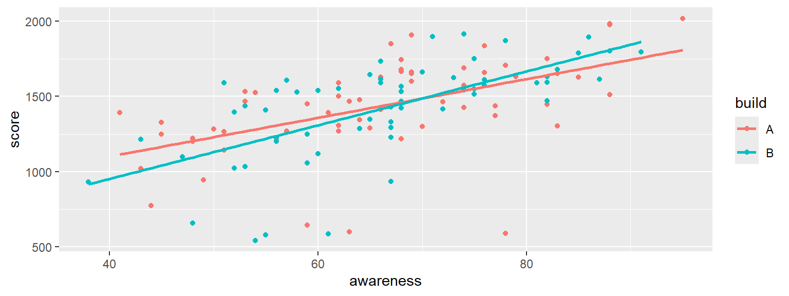
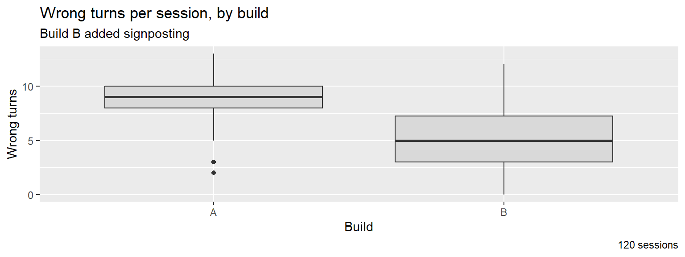
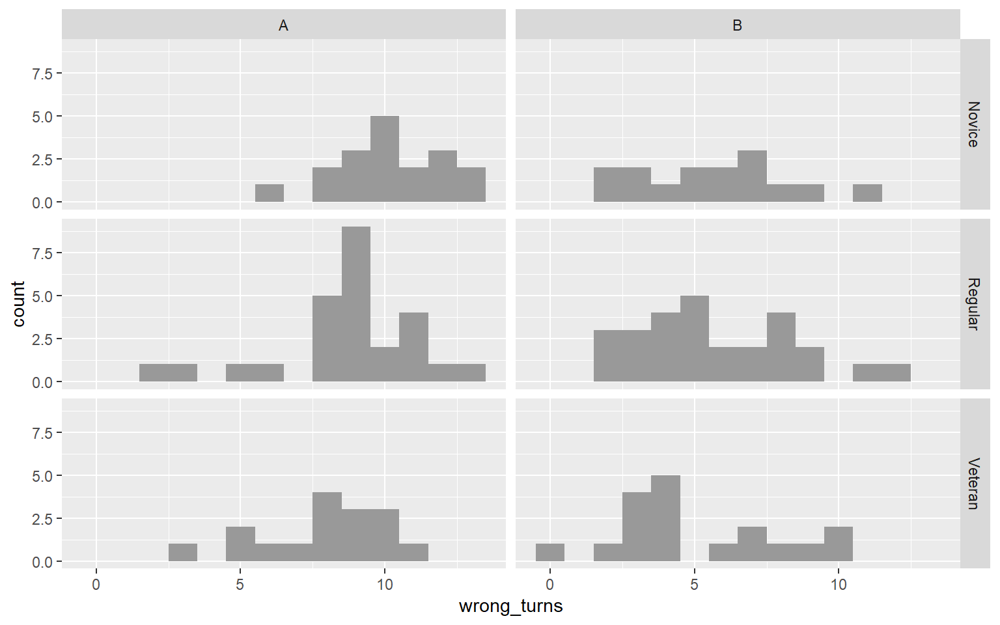

ggplot(sessions, aes(x = score)) +
geom_histogram(binwidth = 100, fill = "grey60", colour = "white")
Structure, geometries, aesthetics and the errors you will meet
A lookup sheet, not a tutorial. Visualising with ggplot2 teaches the ideas; this page is for finding an argument name or a fix quickly during a lab. Every example draws Tidebreak data and runs when the site is built.
Every figure has the same shape. Only the first two lines are required.
ggplot(data, aes(x = ..., y = ..., colour = ...)) + # data and mapping
geom_...() + # geometry
facet_wrap(~ ...) + # optional: one panel per group
labs(title = "...", x = "...", y = "...") # optional: labels| Part | Job | Written as |
|---|---|---|
| Data | The data frame, one row per observation | First argument to ggplot() |
| Mapping | Which column drives which visual property | aes(x = ..., y = ...) |
| Geometry | The kind of mark drawn | geom_histogram(), geom_point(), … |
| Facets | Split into small panels by a group | facet_wrap(~ build) |
| Labels | Title, axis and legend text | labs(...) |
Pieces are joined with +, and the + goes at the end of a line, never the start of the next.
| Geometry | Mapping it needs | Shows | Base R equivalent |
|---|---|---|---|
geom_histogram() |
x numeric |
Shape of one numeric variable | hist() |
geom_bar() |
x categorical |
Count of each category | barplot(table()) |
geom_boxplot() |
x categorical, y numeric |
A numeric variable compared across groups | boxplot(y ~ x) |
geom_point() |
x and y numeric |
Two numeric variables together | plot(x, y) |
geom_smooth() |
x and y numeric |
The trend through a scatterplot | abline(lm(y ~ x)) |
geom_histogram()ggplot(sessions, aes(x = score)) +
geom_histogram(binwidth = 100, fill = "grey60", colour = "white")
Set binwidth in the units of the variable. Without it, ggplot2 picks 30 bins and prints a message telling you to choose.
geom_bar()ggplot(sessions, aes(x = quit_reason, fill = build)) +
geom_bar(position = "dodge")
Give geom_bar() the raw column; it counts for you. position = "dodge" puts groups side by side instead of stacking them.
geom_boxplot()ggplot(sessions, aes(x = build, y = wrong_turns)) +
geom_boxplot(fill = "grey85")
Group on x, numeric on y. Swap them to draw the boxes horizontally.
geom_point()ggplot(sessions, aes(x = awareness, y = score, colour = cohort)) +
geom_point()
Add alpha = 0.5 to geom_point() when points overlap, so dense areas show darker.
geom_smooth()ggplot(sessions, aes(x = awareness, y = score)) +
geom_point(colour = "grey50") +
geom_smooth(method = "lm")
method = "lm" draws a straight line. The grey band shows how uncertain the line is; se = FALSE removes it. Without method, you get a curve that follows every wobble in the data.
| Aesthetic | Controls | Map it to | Example |
|---|---|---|---|
x, y |
Position | Any variable | aes(x = build, y = score) |
colour |
Points, lines, and the outline of areas | A group, or a numeric for a gradient | aes(colour = cohort) |
fill |
The inside of bars, boxes and bins | A group | aes(fill = build) |
group |
Which rows belong together, without changing colour | A group | aes(group = player_id) |
alpha |
Transparency, 0 to 1 | Usually set, not mapped | geom_point(alpha = 0.5) |
| Where | Result | |
|---|---|---|
| Mapped | Inside aes(): aes(fill = build) |
Changes with the data; adds a legend |
| Set | Outside aes(): geom_bar(fill = "grey60") |
Fixed for every mark; no legend |
| Method | Code | Makes it easy to |
|---|---|---|
| Colour | aes(colour = build) |
Compare groups at each x value, for points and lines |
| Fill | aes(fill = build) |
Compare groups at each x value, for bars and boxes |
| Facets | facet_wrap(~ build) |
Compare the whole shape of each group |
A grouping aesthetic in ggplot() applies to every layer, so each group gets its own trend line:
ggplot(sessions, aes(x = awareness, y = score, colour = build)) +
geom_point() +
geom_smooth(method = "lm", se = FALSE)
Argument to labs() |
Sets |
|---|---|
title = |
The title above the plot |
subtitle = |
A second line under the title |
x =, y = |
Axis labels. x = NULL removes one |
colour =, fill = |
The legend title for that aesthetic |
caption = |
Small text under the plot, such as the data source or n |
ggplot(sessions, aes(x = build, y = wrong_turns)) +
geom_boxplot(fill = "grey85") +
labs(title = "Wrong turns per session, by build",
subtitle = "Build B added signposting",
x = "Build", y = "Wrong turns",
caption = paste(nrow(sessions), "sessions"))
| Code | Result |
|---|---|
facet_wrap(~ build) |
One panel per build, side by side |
facet_wrap(~ build, ncol = 1) |
Panels stacked, so x axes line up |
facet_grid(cohort ~ build) |
A grid: cohorts down, builds across |
facet_wrap(~ build, scales = "free_y") |
Each panel gets its own y axis. Say so on the figure |
ggplot(sessions, aes(x = wrong_turns)) +
geom_histogram(binwidth = 1, fill = "grey60") +
facet_grid(cohort ~ build)
| Argument | Belongs to | Does |
|---|---|---|
binwidth = 1 |
geom_histogram() |
Width of each bin, in the variable’s units |
position = "dodge" |
geom_bar() |
Groups side by side, not stacked |
alpha = 0.5 |
Any geometry | Half transparent |
method = "lm" |
geom_smooth() |
Straight trend line |
se = FALSE |
geom_smooth() |
Removes the uncertainty band |
fill = "grey60", colour = "white" |
Any geometry | Sets a fixed colour |
| Message | What it means | Fix |
|---|---|---|
could not find function "ggplot" |
The package is not loaded | library(ggplot2) |
Cannot use `+` with a single argument |
A line starts with + |
Move the + to the end of the line above |
mapping must be created by `aes()` |
Layers joined with a pipe, %>%, instead of + |
Join ggplot2 layers with + |
object 'build' not found |
A column name used outside aes() |
Put it inside: aes(colour = build) |
object 'Score' not found |
Misspelled or wrongly capitalised column | Check with names(sessions) |
stat_bin() requires a continuous x aesthetic |
A histogram of a categorical column | Use geom_bar() |
stat_count() must only have an x or y aesthetic |
geom_bar() given both x and y |
Drop y, or use a boxplot to show a numeric by group |
stat_bin() using `bins = 30` |
Not an error: a reminder | Set binwidth |
| Mistake | What you see | Fix |
|---|---|---|
| Mapping instead of setting | geom_point(aes(colour = "blue")) draws salmon points and a legend reading “blue” |
Fixed colours go outside aes() |
| Wrong variable type | aes(colour = difficulty) on a 1–7 rating draws a gradient, not seven groups |
aes(colour = factor(difficulty)) |
| Inappropriate plot choice | A bar per group showing only its average hides the spread and any outliers (rule 7) | A boxplot, or a faceted histogram |
| Stacking groups you meant to compare | Only the bottom group starts at zero, so the others cannot be read | position = "dodge", or facet |
| Overusing colour | Every group coloured “for consistency” on a chart that is not about groups | Set one colour; map colour only when it carries information |
| Misleading axes | A bar chart with the y axis cut off above zero makes small differences look large. Free facet scales make different panels look alike | Bars start at zero. Keep facet scales shared unless stated on the figure |
| Default labels | session_minutes on an axis |
labs(x = "Minutes played") |
See also: Visualising with ggplot2, Ten Rules, R and Quarto Reference, Statistics Reference.